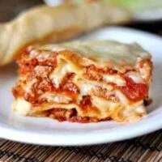

lasagna
3 cups ricotta cheese
3/4 cup grated Parmesan cheese
2 egg
1 pound ground beef
1 jar (45 ounces) Prego® Traditional Italian Sauce
12 cooked lasagna noodles, drained
12 ounces shredded mozzarella cheese (about 3 cups)
